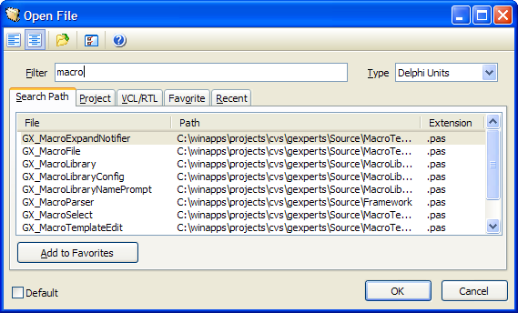

Open File |
|
The Open File tool allows you to search for and quickly open any type of file. The filter string you type will cause the file list to only show files containing that filter. The type dropdown allows you to select the groups of files to show in the lists.
There are several tabs that show different groups of files:
•Search Path: Files on the project search path and the IDE-global search path •Project: Files in the project •VCL/RTL: Files in the IDE's Source directory •Favorite: Files you have specifically indicated as a favorite file •Recent: Files that have been opened in the IDE recently
Using the Options button, you can define custom file groups to use when filtering the file list using the Type dropdown. You can also configure custom directories to search and for files to add to the search path tab when that file group is selected. You can also choose to override the IDE's Open Project, Unit List, and Form list dialogs to bring up the Open File tool with a specific file group pre-selected. 
|